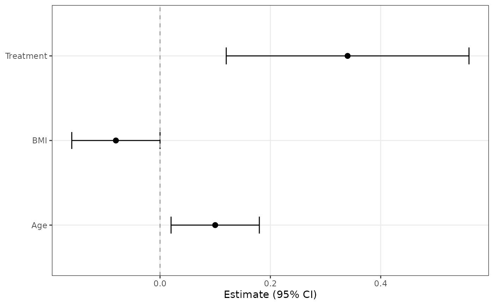
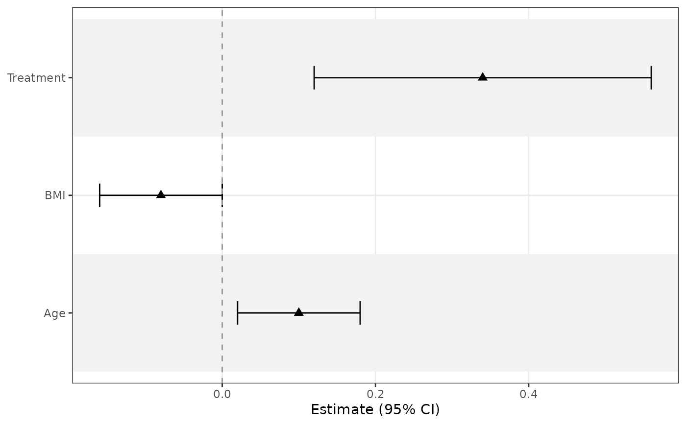

Builds a forest plot from standardized coefficient data or directly from a fitted model.
Usage
ggforestplot(
data,
term = "term",
estimate = "estimate",
conf.low = "conf.low",
conf.high = "conf.high",
label = term,
group = NULL,
grouping = NULL,
grouping_strip_position = c("left", "right"),
separate_groups = NULL,
n = NULL,
events = NULL,
p.value = NULL,
exponentiate = FALSE,
sort_terms = c("none", "descending", "ascending"),
point_size = 2.3,
point_shape = 19,
line_size = 0.5,
staple_width = 0.2,
dodge_width = 0.6,
separate_lines = FALSE,
separator_line_linetype = 2,
separator_line_colour = "black",
separator_line_size = 0.4,
striped_rows = FALSE,
stripe_fill = "grey95",
stripe_colour = NA,
zero_line = TRUE,
zero_line_linetype = 2,
zero_line_colour = "grey60"
)Arguments
- data
Either a tidy coefficient data frame or a model object supported by
broom::tidy().- term
Column name holding the model term identifiers.
- estimate
Column name holding the point estimates.
- conf.low
Column name holding the lower confidence bounds.
- conf.high
Column name holding the upper confidence bounds.
- label
Optional column name used for the displayed row labels.
- group
Optional column name used for color-grouping estimates.
- grouping
Optional column name used to split rows into grouped plot sections.
- grouping_strip_position
Positioning for grouped section strips.
- separate_groups
Optional column name used to identify labeled variable blocks that can be outlined with grid lines.
- n
Optional column name holding sample sizes or other N labels for table helpers.
- events
Optional column name holding event counts or event labels for table helpers.
- p.value
Optional column name holding p-values.
- exponentiate
Logical; if
TRUE, transform the estimates and draw the axis on the log scale with the null line at 1.- sort_terms
How to sort rows:
"none","descending", or"ascending".- point_size
Point size for coefficient markers.
- point_shape
Shape used for coefficient markers.
- line_size
Line width for confidence intervals.
- staple_width
Width of the terminal staples on confidence interval lines.
- dodge_width
Horizontal dodging used for grouped estimates.
- separate_lines
Logical; if
TRUE, draw grid lines around each labeled block identified byseparate_groups.- separator_line_linetype
Line type used for separator lines.
- separator_line_colour
Colour used for separator lines.
- separator_line_size
Line width used for separator lines.
- striped_rows
Logical; if
TRUE, shade alternating rows.- stripe_fill
Fill color used for shaded rows.
- stripe_colour
Border color for shaded rows.
- zero_line
Logical; if
TRUE, draw a null reference line.- zero_line_linetype
Line type for the null reference line.
- zero_line_colour
Color for the null reference line.
Value
A ggplot object. Use standard ggplot2 functions such as
ggplot2::labs() for plot labels, and add composition helpers after
styling the main plot.
Examples
coefs <- data.frame(
term = c("Age", "BMI", "Treatment"),
estimate = c(0.10, -0.08, 0.34),
conf.low = c(0.02, -0.16, 0.12),
conf.high = c(0.18, 0.00, 0.56)
)
ggforestplot(coefs)

ggforestplot(coefs, striped_rows = TRUE, point_shape = 17)
